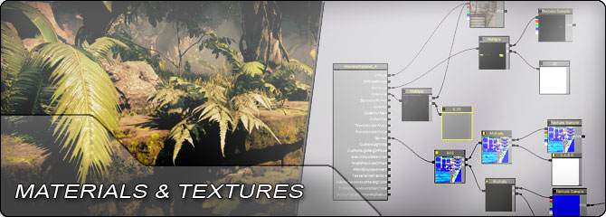

UDN
Search public documentation:
MaterialsAndTexturesHomeCH
English Translation
日本語訳
한국어
Interested in the Unreal Engine?
Visit the Unreal Technology site.
Looking for jobs and company info?
Check out the Epic games site.
Questions about support via UDN?
Contact the UDN Staff
日本語訳
한국어
Interested in the Unreal Engine?
Visit the Unreal Technology site.
Looking for jobs and company info?
Check out the Epic games site.
Questions about support via UDN?
Contact the UDN Staff
UE3 主页 > 材质 & 贴图
材质 & 贴图

材质
- 材质编辑器用户指南 - 关于UE3中基于节点的材质编辑器的概述。
- 材质实例编辑器用户指南 - 关于UE3中材质实例编辑器的概述。
- 材质概述 - 有关材质输入和属性的相关说明。
- 实例化材质 - 关于UE3中材质实例化系统的概述。
- 材质实例常量 - 关于使用参数化的材质实例的指南。
- 随着时间变化的材质实例 - 关于使用随着时间变化的材质实例的指南。
- 带光照的半透明物体 - 使用静态光照的半透明物体的概述。
- 移动设备材质参考指南 - 有关为移动设备创建材质的信息。
- 材质函数 - 有关材质函数的说明。
- 自定义光照 - 如何使用自定义光照模型。
- 各向异性光照 - 如何使用各向异性光照模型。
- 软遮罩 - 软遮罩混合模型的概述。
- DepthBiasBlend 用法 - 使用 DepthBiasBlend 表达式的指南。
- 使用 Alpha 创建头发 - 在虚幻引擎 3 中使用材质和网格物体创建头发。
- 假的网格物体光照 - 如何使用材质在网格物体或粒子上设置假的光照。
- 世界位置偏移 - 如何使用 WorldPositionOffset 材质输入。
- 材质蒙板 - 使用材质表达式算法创建蒙板和渐变效果。
- 基于图像的反射 - 渲染光滑的全景HDR反射。
- 屏幕空间次表面散射 - 真实人类皮肤的 SSS 材质效果。
- Tessellation（多边形细分） - 从包括轮廓在内的平滑表面的网格物体上生成更多的三角形。
贴图
 ���可以看到，在它们全部共享同一个布局时，会根据贴图的不同意图使用颜色。
���可以看到，在它们全部共享同一个布局时，会根据贴图的不同意图使用颜色。